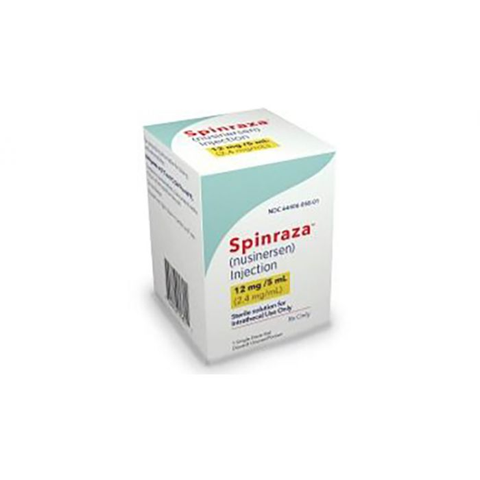
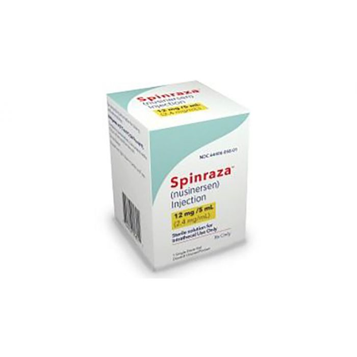

ABOUT SPINRAZA
Nusinersen, marketed as Spinraza, is a medication used in treating spinal muscular atrophy (SMA), a rare neuromuscular disorder. In December 2016, it became the first approved drug used in treating this disorder.
-wikidepia-

Nusinersen, marketed as Spinraza, is a medication used in treating spinal muscular atrophy (SMA), a rare neuromuscular disorder. In December 2016, it became the first approved drug used in treating this disorder.
-wikidepia-
